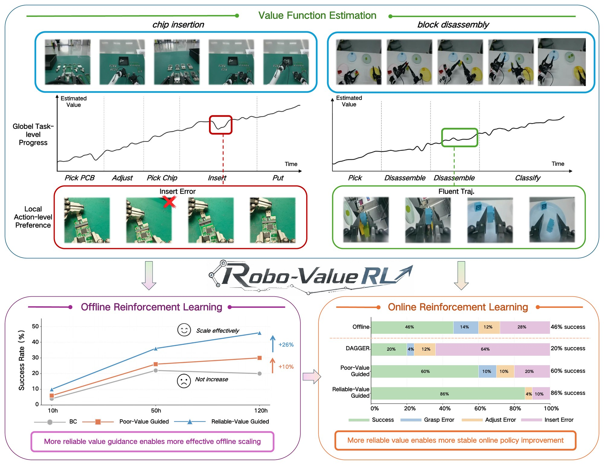
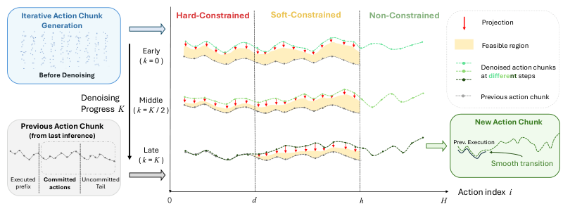
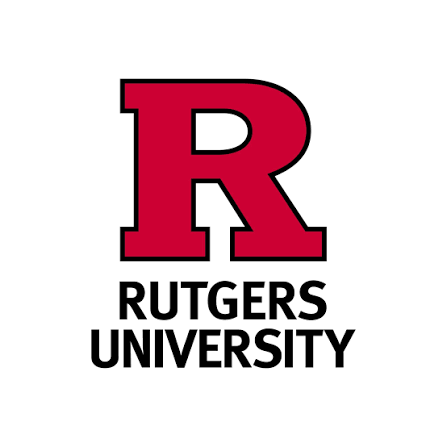

I am a senior undergraduate student majoring in Automation at Beijing Forestry University.
I am also a member of GeWu-Lab, working closely with Wenke Xia and Prof. Di Hu, and previously worked closely with Zhengping Che at Beijing Innovation Center of Humanoid Robotics.
This past summer, I was fortunate to serve as a Summer Research Intern at the ARC Lab@Rutgers University, advised by Prof. Jingjin Yu.
My research interests focus on Robot Learning and Agentic Robotics, with the primary goal of achieving general and robust physical intelligence in the complex real world.
🔍 I am actively seeking CS/Robotics PhD positions starting Fall 2027. Feel free to reach out anytime!
Latest News
🎉 CoRL 2026 - Two papers ("Robo-ValueRL" & "Barrier-Constrained Guidance For Real-time Asynchronous VLA Execution") have been accepted! Thanks to all co-authors!
Research - Started research at Rutgers University as a summer intern.
🎉 CVPR 2026 - Our paper "GeCo-SRT: Geometry-aware Continual Adaptation for Robotic Cross-Task Sim-to-Real Transfer" has been accepted! Thanks to all co-authors!
CHI 2025 - Served as a Student Volunteer at ACM CHI Conference in Yokohama, Japan.
Research - Started research at GeWu-Lab, Renmin University of China as a Research Assistant.
Award - Received Second Prize in Beijing Division of China International College Students' Innovation Competition 2024.
Scholarship - Awarded First Class Scholarship for Outstanding Students (Top 1%) at Beijing Forestry University.
Selected Publications



Barrier-Constrained Guidance For Real-time Asynchronous VLA Execution CoRL 2026
Experience
Research Assistant
Dec 2024 - Present
Research Intern
Apr 2026 - Jul 2026

Summer Research Intern
Summer 2026
Bachelor of Engineering
Sep 2023 - Jun 2027 (Expected)
Honors & Awards
First Class Scholarship for Outstanding Students (Top 1%), Beijing Forestry University
Science and Technology Innovation Scholarship, Beijing Forestry University
Second Prize (Beijing Division), China International College Students' Innovation Competition
Third Prize, "TI Cup" Beijing College Student Electronic Design Competition